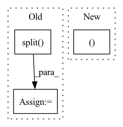

Pattern ID :363
Before Change
heatmaps_pred = output.reshape(
(batch_size, num_joints, -1)).split(1, 1)
heatmaps_gt = target.reshape((batch_size, num_joints, -1)).split( 1, 1)
loss = 0.
for idx in range(num_joints):After Change
if self.use_target_weight:
loss = self.criterion(output * target_weights[..., None, None],
target * target_weights[..., None, None ])
else:
loss = self.criterion(output, target)
In pattern: SUPERPATTERN
Frequency: 3
Non-data size: 3
Instances Fragment ID: 1383796
Project Name: open-mmlab/mmpose
Commit Name: 23954dab675977d9762e61680a0b4a02ee2479f9
Time: 2022-08-02
Author: 87690686+liqikai9@users.noreply.github.com
File Name: mmpose/models/losses/mse_loss.py
M Class Name: KeypointMSELoss
N Class Name: KeypointMSELoss
M Method Name: forward(4)
N Method Name: forward(4)
M Parent Class: nn.Module
N Parent Class: nn.Module
M File Name: mmpose/models/losses/mse_loss.py
N File Name: mmpose/models/losses/mse_loss.py
M Start Line: 24
M End Line: 45
N Start Line: 28
N End Line: 53
Before Change
def forward(self, x, x_lens, init_state_h_box=None, init_state_c_box=None):
if init_state_h_box is not None:
if self.use_gru is True:
init_state_h_list = torch.split( init_state_h_box, self.num_rnn_layers, dim=0)
init_state_list = init_state_h_list
else:
init_state_h_list = torch.split(init_state_h_box, self.num_rnn_layers, dim=0)
init_state_c_list = torch.split(init_state_c_box, self.num_rnn_layers, dim=0)After Change
final_chunk_state_list.append(final_state)
if self.use_gru:
return x, final_chunk_state_list, init_state_c_box
else:
final_chunk_state_h_list = [final_chunk_state_list[i][0] for i in range(self.num_rnn_layers)]
final_chunk_state_c_list = [final_chunk_state_list[i][1] for i in range(self.num_rnn_layers)]
final_chunk_state_h_box = torch.concat(final_chunk_state_h_list, dim=0) Fragment ID: 1383810
Project Name: yeyupiaoling/masr
Commit Name: c77fa0a1161da200aaaa5d7bfe696d5333fb9a3f
Time: 2022-07-09
Author: 1483586698@qq.com
File Name: masr/model_utils/deepspeech2/rnn.py
M Class Name: RNNStack
N Class Name: RNNStack
M Method Name: forward(5)
N Method Name: forward(5)
M Parent Class: nn.Module
N Parent Class: nn.Module
M File Name: masr/model_utils/deepspeech2/rnn.py
N File Name: masr/model_utils/deepspeech2/rnn.py
M Start Line: 58
M End Line: 74
N Start Line: 58
N End Line: 72
Before Change
def forward(self, item):
G_cls, G_reg = map(item.get, ["proposal_targets_cls", "proposal_targets_reg"])
P_cls, P_reg = map(item.get, ["proposal_scores", "proposal_boxes"])
G_cls, mask_cls = G_cls.split( [self.cfg.NUM_CLASSES, 1], dim=1)
mask_reg = G_cls[:, :-1, ..., None].sum(1, keepdim=True)
cls_loss = self.cls_loss(P_cls, G_cls, mask_cls)
reg_loss = self.reg_loss(P_reg, G_reg, mask_reg)
loss = cls_loss + self.cfg.TRAIN.LAMBDA * reg_lossAfter Change
def forward(self, item):
TODO: Decide on cleaner input representation.
keys = ["G_cls", "M_cls", "P_cls", "G_reg", "M_reg", "P_reg"]
G_cls, M_cls, P_cls, G_reg, M_reg, P_reg = map(item.get, keys)
cls_loss = self.cls_loss(P_cls, G_cls, M_cls)
reg_loss = self.reg_loss(P_reg, G_reg, M_reg)
loss = cls_loss + self.cfg.TRAIN.LAMBDA * reg_loss Fragment ID: 1383800
Project Name: jhultman/vision3d
Commit Name: 03a0b92af929371cce91e1666b92f92192e49129
Time: 2020-02-22
Author: 27909223+jhultman@users.noreply.github.com
File Name: pvrcnn/detector/proposal.py
M Class Name: ProposalLoss
N Class Name: ProposalLoss
M Method Name: forward(2)
N Method Name: forward(2)
M Parent Class: nn.Module
N Parent Class: nn.Module
M File Name: pvrcnn/detector/proposal.py
N File Name: pvrcnn/detector/proposal.py
M Start Line: 92
M End Line: 95
N Start Line: 84
N End Line: 85